Multilevel models about how and why variables change over time
Published
March 11, 2025
Longitudinal data analysis refers to the examination of how variables change over time, typically within individuals. Multilevel modeling allows us to study “unbalanced” longitudinal data in which not everyone has the same number of measurements.
In clustered data, the lowest level is typically a person, with higher levels referring to groups of people. With longitudinal data, the person is typically level 2, and level 1 is a measurement occasion associated with a specific instance in time.
With multilevel approaches to longitudinal data, data for each person fits on multiple rows with each measurement instance on its own row as seen in Table 1.
person_id
time
x
y
1
0
6
5
1
1
7
6
1
2
10
7
…
…
…
…
2
0
14
2
2
1
18
3
2
2
20
5
…
…
…
…
Table 1: Longitudinal data with multiple rows per person
Specifying when the time variable equals 0 becomes increasingly important with complex longitudinal model because it influences the interpretation of other coefficients in the model. If there are interaction effects or polynomial effects, the lower-order effects refer to the effect of the variable when all other predictors are 0. Thus, we try to mark time such that T0 (when time = 0) is meaningful. For example, T0 is often simply the first measurement occasion. T0 could be the point at which an important event occurs, such as the onset of an intervention. In such cases, measurements before the intervention are marked as negative (Time = −3, −2, −1, 0, 1, 2, …).
Time does not have to be marked as integers, not everyone needs to be measured at the same times, and measurements do not necessarily need to occur at exactly T0. For person 1, the measurements could be at Time = −2.1 minutes, +5.3 minutes, and +44.2 minutes. For person 2, the measurements could be at Time = −8.8 minutes, −6.0 minutes, +10.1 minutes, and +10.5 minutes.
Hypothetical Longitudinal Study of Reading Comprehension
Suppose we are measuring how schoolchildren’s reading comprehension changes over time. We believe that reading comprehension (understanding of the text’s meaning) is influenced by Reading Decoding skills (correct identification of words). If we measure Reading Decoding skill at each occasion, it is a time-varying covariate at level 1.
Suppose we believe that children’s working memory capacity also is an important influence on reading comprehension. If we only measure working memory capacity once (typically at the beginning of the study), working memory capacity is a person-level covariate at level 2. Of course, if we had measured working memory capacity at each measurement occasion, it would be an additional time-varying covariate at level 1.
For the sake of demonstration, I am going to present a model in which Working Memory Capacity not only influences the initial level of Reading Comprehension, but it also has every possible cross-level interaction effect. In a real analysis, we would only investigate such effects if we had good theoretical reasons for doing so. Testing for every possible effect just because we can will dramatically increase our risk of “finding” spurious effects.
Level 1: Measurement Occasion
Every time a person is measured, we will call this a measurement occasion. In longitudinal studies, each measurement occasion is placed in its own data row.
The measure of Reading Comprehension for person i at occasion (time) t.
RD_{ti}
The measure of Reading Decoding at occasion t for person i.
T_{ti}
How much time has elapsed at occasion t for person i.
b_{0i}
The random intercept: The predicted Reading Comprehension for person i at time 0 (T0) if Reading Decoding = 0.
b_{1i}
The random slope of Time: The rate of increase in Reading Comprehension for person i if Reading Decoding is held constant at 0.
b_{2i}
The size of Reading Decoding’s association with Reading Comprehension for person i.
e_{ti}
The deviation from expectations for Reading Comprehension at occasion t for person i. It represents the model’s failure to accurately predict Reading Comprehension at each measurement occasion.
\tau_1
The variance of e_{ti}
Level 2: Person
Predicting the Random Intercept (b_{0i}): What Determines the Conditions at T0?
If Time and Reading Decoding = 0, what determines our prediction of Reading Comprehension?
b_{0i}=b_{00}+b_{01}WM_i+e_{0i}
Variable
Interpretation
b_{0i}
The random intercept: The predicted Reading Comprehension for person i at time 0 (T0) if Reading Decoding = 0.
WM_i
The measurement of Working Memory Capacity for person i.
b_{00}
The predicted value of Reading Comprehension when Time, Reading Decoding, and Working Memory = 0.
b_{01}
Working Memory’s association with Reading Comprehension at T0 when Reading Decoding is 0.
e_{0i}
Person i’s deviation from expectations for the random intercept. It represents the model’s failure to predict each person’s random intercept.
Predicting Time’s Random Slope: What determines the effect of time (Grade)?
Suppose we believe that Reading Comprehension will, on average, increase over time for everyone, but the rate of increase will be faster for children with greater working memory capacity.
b_{1i}=b_{10}+b_{11}WM_i+e_{1i}
Variable
Interpretation
b_{1i}
The random slope of Time: The rate of increase in Reading Comprehension for person i if Reading Decoding is held constant at 0.
b_{10}
The rate at which Reading Comprehension increases for each unit of time if both Reading Decoding and Working Memory are held constant at 0.
b_{11}
Working Memory’s effect on the rate of Reading Comprehension’s change over time, after controlling for Reading Decoding (i.e., if Reading Decoding were held constant at 0). If positive, students with higher working memory should improve their Reading Comprehension ability faster than students with lower working memory.
e_{1i}
Person i’s the deviation from expectations for the random slope for time. It represents the model’s failure to predict each person’s rate of increase in Reading Comprehension over time (after controlling for Reading Decoding).
Predicting Reading Decoding’s Random Slope: What determines the effect of Reading Decoding?
Suppose that the effect of Reading Decoding on Reading Comprehension differs from person to person. Obviously, to comprehend text a person needs at least some ability to decode words. However, there is evidence that working memory helps a person make inferences in reading comprehension such that one can work around unfamiliar words and still derive meaning from the text. Thus, we might predict that higher Working Memory Capacity makes Reading Decoding a less important predictor of Reading Comprehension.
b_{2i}=b_{20}+b_{21}WM_i+e_{2i}
Variable
Interpretation
b_{2i}
The size of Reading Decoding’s association with Reading Comprehension for person i.
b_{20}
The size of the association of Reading Decoding and Reading Comprehension when Working Memory is 0.
b_{21}
The interaction effect of Working Memory and Reading Decoding. It represents how much the effect of Reading Decoding on Reading Comprehension changes for each unit of increase in Working Memory.
e_{2i}
Person i’s the deviation from expectations for the random slope for Reading Decoding. It represents the model’s failure to predict the person-specific relationship between Reading Decoding and Reading Comprehension.
Level-2 Random Effects
The error terms at level 2 (e_{0i}, e_{1i}, \&~e_{2i}) have variances, and possibly covariances.
We begin at level 2 by setting the sample size, the fixed effects, the level-2 random effect covariance matrix (\boldsymbol{\tau}), and
We can simulate Working Memory Capacity as a standard normal variable.
library(tidyverse)library(lme4)library(sjPlot)set.seed(123456)# Sample sizen_person <-2000# Number of occasionsn_occasions <-6# Fixed effectsb_00 <-60# Fixed interceptb_01 <-10# simple main effect of working memoryb_10 <-50# simple main effect of time (Grade)b_11 <-5# time * working memory interactionb_20 <-8# simple main effect of reading decodingb_21 <--0.9# reading decoding * working memory interaction# Standard deviations of level-2 random effectse_sd <-c(e_0i =50, # sd of random intercepte_1i =1.7, # sd of random slope for timee_2i =1.8) # sd of random slope for reading decoding# Correlations among level-2 random effectse_cor <-c(1,0, 1,0, 0, 1) %>% lavaan::lav_matrix_lower2full(.)# level-2 random effects covariance matrixtau_2 <- lavaan::cor2cov(R = e_cor, sds = e_sd, names =names(e_sd))# simulate level-2 random effectse_2 <- mvtnorm::rmvnorm(n_person, mean =c(e_0i =0, e_1i =0, e_2i =0), sigma = tau_2) %>%as_tibble()# Simulate level-2 data and coefficientsd_level2 <-tibble(person_id =factor(1:n_person),n_occasions = n_occasions,working_memory =rnorm(n_person)) %>%bind_cols(e_2) %>%mutate(b_0i = b_00 + b_01 * working_memory + e_0i,b_1i = b_10 + b_11 * working_memory + e_1i,b_2i = b_20 + b_21 * working_memory + e_2i)d_level2
Let’s say that our measurement of our level-1 variables occurs at the beginning of each Grade starting in Kindergarten (i.e., Grade 0) and continues every year until fifth grade. Our measurement of working memory capacity occurs once—at the beginning of Kindergarten.
Make copies of each row in d_level2 according to what value is in n_occasions, which in this case is 6 in every row. Thus, the 6 copies of each row d_level2 are made.
mutate(Grade = row_number() - 1), .by = person_id
Create a variable called Grade by taking the row number of each group defined by person_id and subtract 1. Because there are 6 rows per person, the values within each person will be 0, 1, 2, 3, 4, 5
If the data were real, and I wanted to test the hypothesized model, I would run this code:
Linear mixed model fit by REML ['lmerMod']
Formula:
reading_comprehension ~ 1 + Grade * working_memory + reading_decoding *
working_memory + ((1 | person_id) + (0 + Grade | person_id) +
(0 + reading_decoding | person_id))
Data: d_level1
REML criterion at convergence: 109220.4
Scaled residuals:
Min 1Q Median 3Q Max
-3.3829 -0.5871 -0.0044 0.5850 3.0921
Random effects:
Groups Name Variance Std.Dev.
person_id (Intercept) 2460.172 49.600
person_id.1 Grade 2.241 1.497
person_id.2 reading_decoding 3.517 1.875
Residual 222.953 14.932
Number of obs: 12000, groups: person_id, 2000
Fixed effects:
Estimate Std. Error t value
(Intercept) 60.7239 1.4854 40.880
Grade 50.1376 0.3272 153.240
working_memory 10.7375 1.4716 7.296
reading_decoding 7.9683 0.1640 48.599
Grade:working_memory 5.5824 0.3233 17.265
working_memory:reading_decoding -1.0912 0.1620 -6.734
Correlation of Fixed Effects:
(Intr) Grade wrkng_ rdng_d Grd:w_
Grade 0.587
workng_mmry 0.045 0.043
redng_dcdng -0.621 -0.932 -0.039
Grd:wrkng_m 0.042 -0.010 0.584 0.012
wrkng_mmr:_ -0.039 0.012 -0.619 -0.018 -0.931
Figure 1 plots the observed data, in which we can see that both reading decoding and reading comprehension increase across grade and that high working memory is associated with higher levels of the reading variables.
ggplot(d_level1, aes(reading_decoding, reading_comprehension, color = working_memory)) +geom_point(pch =16, size = .75) +geom_smooth(method ="lm", formula = y ~ x) +facet_grid(rows =vars(Grade), as.table = F, labeller = label_both) +scale_color_gradient2("Working\nMemory\nCapacity", mid ="gray80", low ="royalblue", high ="firebrick") +labs(x ="Reading Decoding", y ="Reading Comprehension")
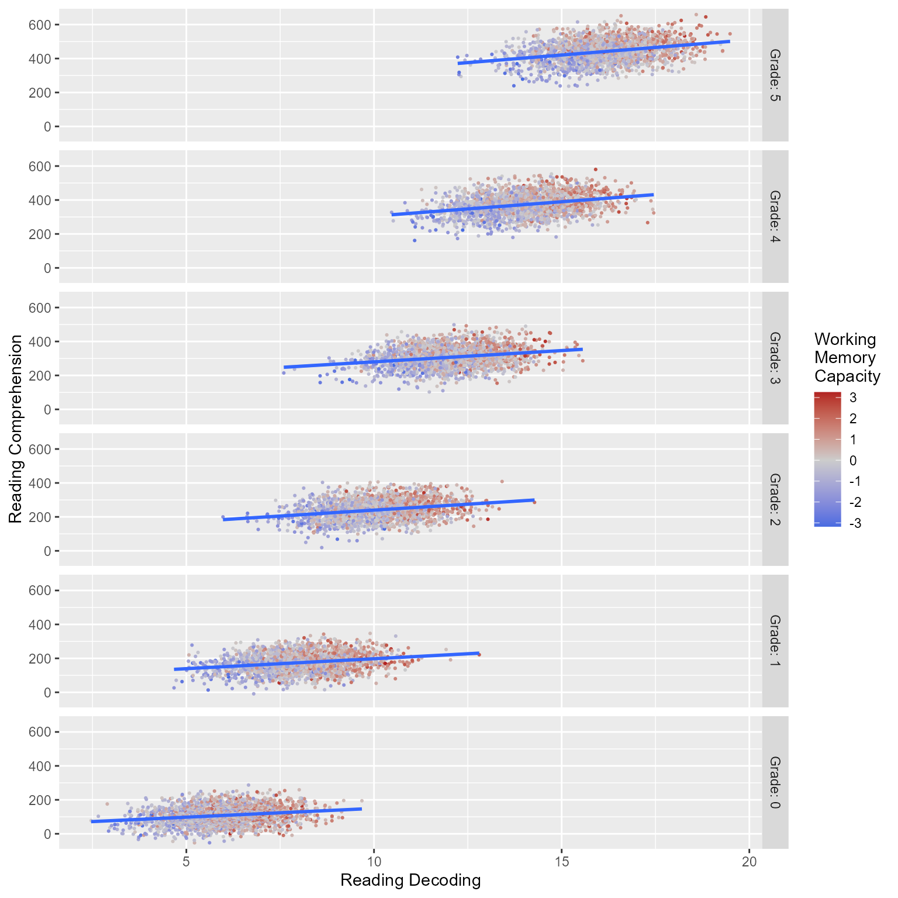
Figure 1: Reading Decoding Predicting
These effects might be easier to see in an animated plot like Figure 2.
In the terms parameter of the plot_model function, the first term is what goes on the x-axis. The second term is the moderator variable that shows up as lines with different colors. By default, it plots values at plus or minus 1 standard deviation, but you can specify any values you wish.
In Figure 3, it can be seen that reading decoding is related to reading comprehension but the strength of that relation depends on working memory. The effects of reading decoding are increasingly strong as working memory decreases.
library(sjPlot)# Simple slopes of reading decoding at different levels of working memory (collapsing across grade)plot_model(fit, type ="pred", terms =c("reading_decoding", "working_memory [-1, 0, 1]"))
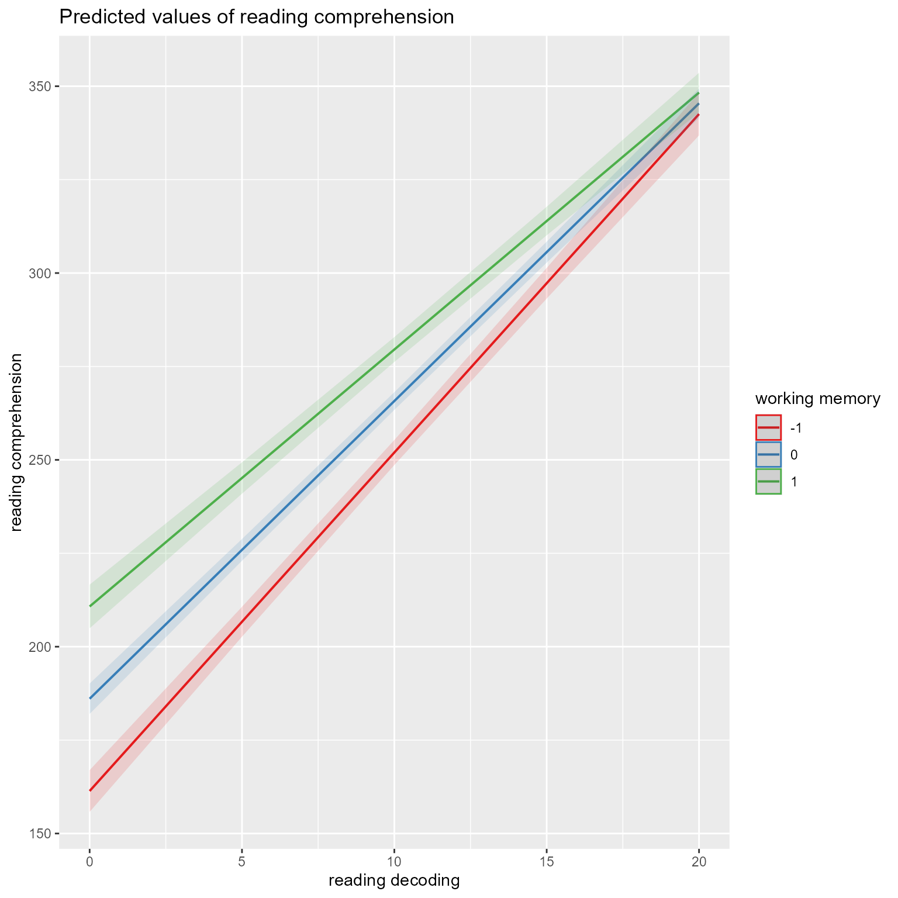
Figure 3: The Effects of Reading Decoding Are Moderated by Working Memory
Another way to think about the interaction is to say that for poor decoders working memory strongly predicts reading comprehension. By contrast, for strong decoders, working memory is a weak predictor. In Figure 4, we are viewing the same interaction seen Figure 3 but we have flipped the x-axis and the color-facet. There is no new information here, but it helps to see the finding from different vantage points.
library(sjPlot)# Simple slopes of working memory at different levels of reading decoding (collapsing across grade)plot_model(fit, type ="pred", terms =c("working_memory", "reading_decoding [0, 10, 20]"))
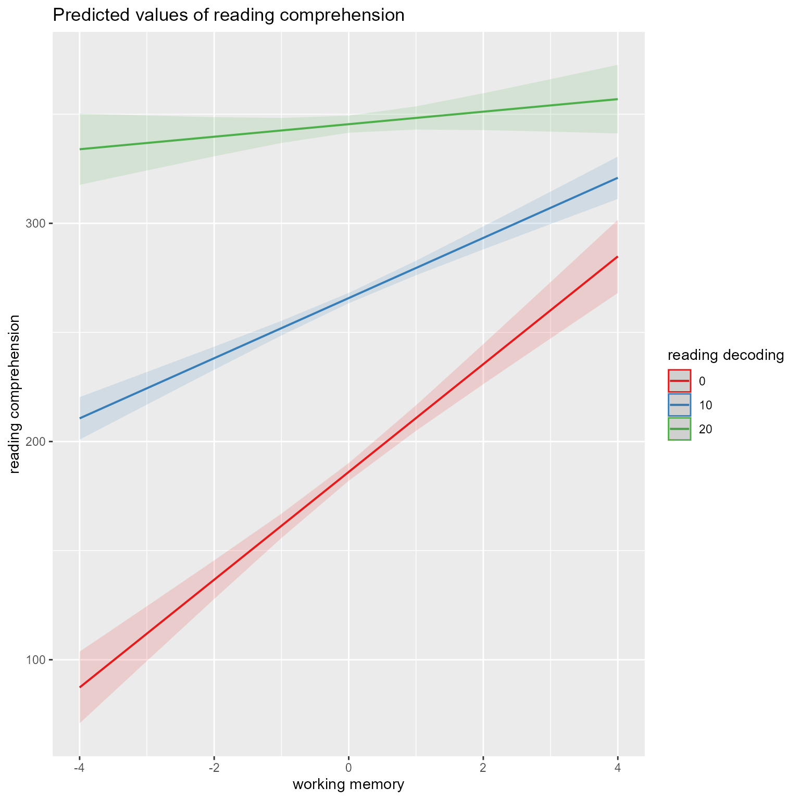
Figure 4: The Effects of Working Memory Depend on Reading Decoding
In Figure 5, we can view the simple slopes of reading decoding at different levels of grade (collapsing across working memory). Because the simple slopes are parallel, it appears that the effect of reading decoding is constant across grades.
plot_model(fit, type ="pred", terms =c("reading_decoding", "Grade"))
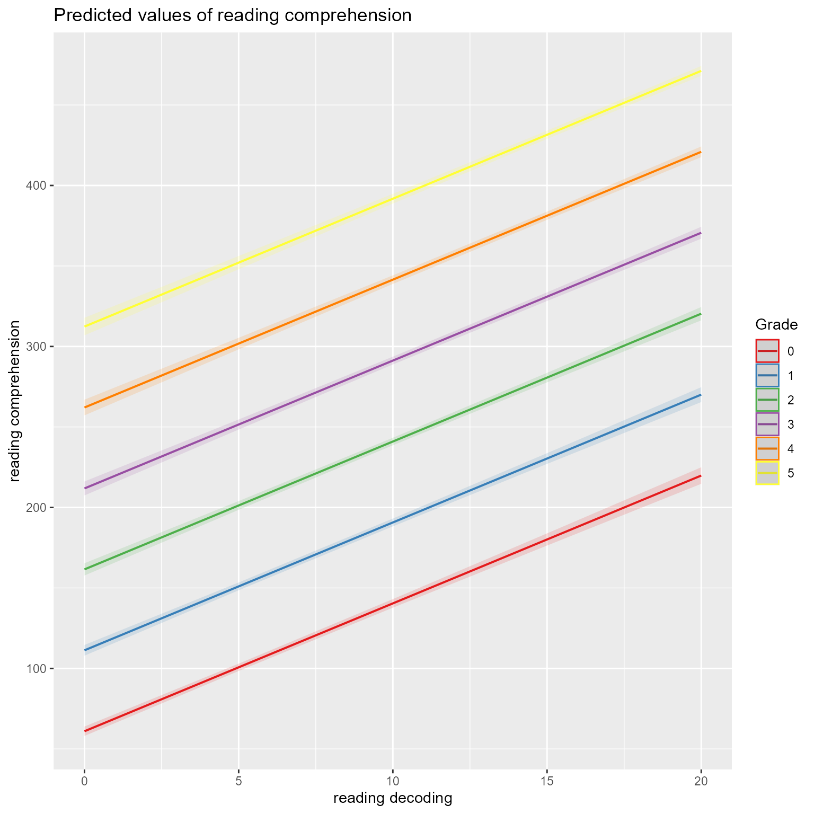
Figure 5: The Effects of Reading Decoding at Different Grades
In Figure 6, we see that reading comprehension grows faster for students with higher working memory than for students with lower working memory.
plot_model(fit, type ="pred", terms =c("Grade", "working_memory [-1, 0, 1]"))
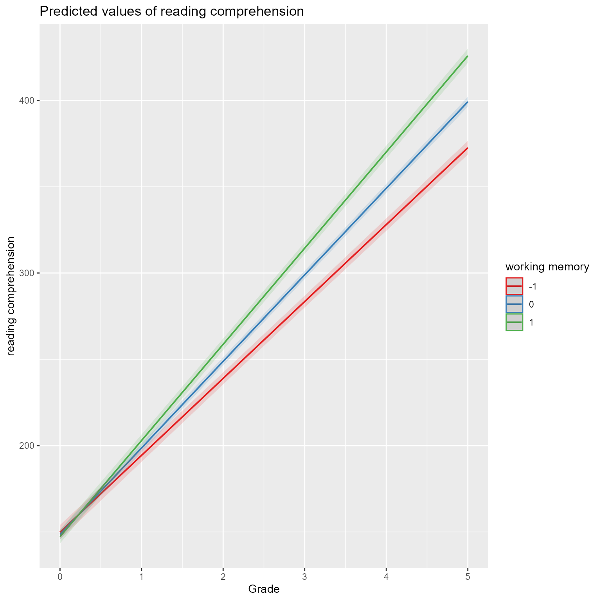
Figure 6: The Growth of Reading Comprehension Across Grade at Different Levels of Working Memory
In Figure 7, we see the effects of reading decoding, working memory, and grade simultaneously. It appears that reading decoding’s effect is stronger for students with lower working memory but that the effect of working memory becomes increasingly strong across grades.
# Show simple slopes of reading decoding at different levels of grade and working memoryplot_model(fit, type ="pred", terms =c("reading_decoding", "working_memory [-1, 0, 1]", "Grade [0:5]"))
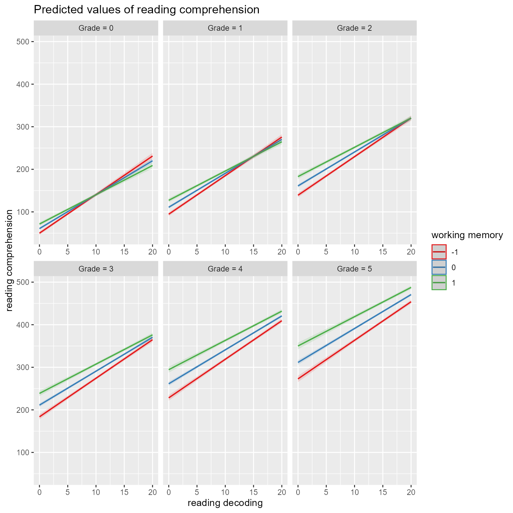
Figure 7: The Effect of Reading Decoding on Reading Comprehensionat Different Levels of Working Memory and Grade
I can’t tell you how much trouble functions like plot_model will save you. I don’t care to admit how many hours of my life have been spent making interaction plots. Of course, ggplot2 made my coding experience much simpler than it used to to be. I mainly use sjPlot to make quick plots. If I needed to make a publication-ready plot, I would probably use code like Figure 8.
# Make predicted values at each unique combination of predictor variablesd_predicted <-crossing(Grade =0:5,working_memory =c(-1, 0, 1),reading_decoding =c(0, 20)) %>%mutate(reading_comprehension =predict(fit, newdata = ., re.form =NA),working_memory =factor(working_memory,levels =c(1, 0,-1),labels =c("High (+1 SD)","Mean","Low (-1 SD)")))ggplot(d_predicted,aes(x = reading_decoding, y = reading_comprehension, color = working_memory)) +geom_line(aes(group = working_memory), size =1) +facet_grid(cols =vars(Grade), labeller =label_bquote(cols = Grade ~ .(Grade))) +scale_color_manual("Working Memory", values =c("firebrick4", "gray30", "royalblue4")) +theme(legend.position =c(1, 0),legend.justification =c(1, 0)) +labs(x ="Reading Decoding", y ="Reading Comprehension") +ggtitle(label ="Predicted Values of Reading Comprehension")
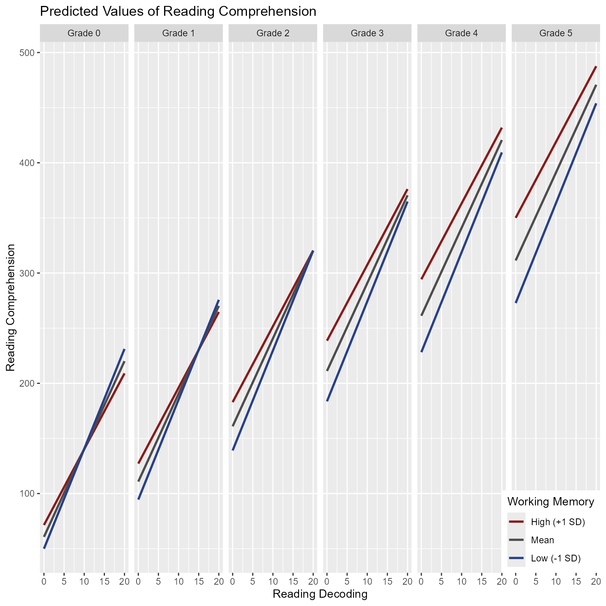
Figure 8: The Effects of Reading Decoding on Reading Comprehension by Working Memory Capacity Across Grades
Also from the sjPlot package, an attractive table:
sjPlot::tab_model(fit)
reading comprehension
Predictors
Estimates
CI
p
(Intercept)
60.72
57.81 – 63.64
<0.001
Grade
50.14
49.50 – 50.78
<0.001
working memory
10.74
7.85 – 13.62
<0.001
reading decoding
7.97
7.65 – 8.29
<0.001
Grade × working memory
5.58
4.95 – 6.22
<0.001
working memory × reading decoding
-1.09
-1.41 – -0.77
<0.001
Random Effects
σ2
222.95
τ00person_id
2460.17
τ11person_id.Grade
2.24
τ11person_id.reading_decoding
3.52
ρ01
ρ01
ICC
0.92
N person_id
2000
Observations
12000
Marginal R2 / Conditional R2
0.831 / 0.986
Table 2: Model Results
Complete Analysis Walkthrough
Okay, suppose that we had no idea how the simulated data were generated. Imagine that we are researchers who collected the data rather than the people who simulated it. However, we hypothesized the model with which the data were simulated. Of course, we can go straight to testing the hypothesized model, but generally we start with the null model and build from there.
Model Building Plan
The sequence of model building is the same but at every step, start with the time variable (Grade in this case). This sequence is a suggestion only.
Null Model (Random Intercepts)
Level 1 Fixed Effects
Time (as many polynomial terms as you hypothesized you would need)
Let’s start where we always start, with no predictors except the random intercept variable. In this case it refers to the person-level intercept.
fit_null <-lmer(reading_comprehension ~1+ (1| person_id), data = d_level1)summary(fit_null)
Linear mixed model fit by REML ['lmerMod']
Formula: reading_comprehension ~ 1 + (1 | person_id)
Data: d_level1
REML criterion at convergence: 150425.3
Scaled residuals:
Min 1Q Median 3Q Max
-2.3787 -0.7944 -0.0162 0.7785 2.8396
Random effects:
Groups Name Variance Std.Dev.
person_id (Intercept) 630.6 25.11
Residual 15707.2 125.33
Number of obs: 12000, groups: person_id, 2000
Fixed effects:
Estimate Std. Error t value
(Intercept) 273.644 1.274 214.7
Here we see that the R2-conditional is 0.04, which is the proportion of variance explained by the entire model. Because the model has only the random intercept as a predictor, it represents the proportion of variance explained by the random intercept (i.e., between-persons variance).
Linear Effect of Time (Grade)
fit_time <-lmer(reading_comprehension ~1+ Grade + (1| person_id), data = d_level1)summary(fit_time)
Linear mixed model fit by REML ['lmerMod']
Formula: reading_comprehension ~ 1 + Grade + (1 | person_id)
Data: d_level1
REML criterion at convergence: 113425.6
Scaled residuals:
Min 1Q Median 3Q Max
-4.3829 -0.6085 -0.0069 0.6017 3.6388
Random effects:
Groups Name Variance Std.Dev.
person_id (Intercept) 3183.8 56.42
Residual 388.3 19.70
Number of obs: 12000, groups: person_id, 2000
Fixed effects:
Estimate Std. Error t value
(Intercept) 108.2498 1.3014 83.18
Grade 66.1577 0.1053 628.12
Correlation of Fixed Effects:
(Intr)
Grade -0.202
We fitted a linear mixed model (estimated using REML and nloptwrap optimizer)
to predict reading_comprehension with Grade (formula: reading_comprehension ~ 1
+ Grade). The model included person_id as random effect (formula: ~1 |
person_id). The model's total explanatory power is substantial (conditional R2
= 0.98) and the part related to the fixed effects alone (marginal R2) is of
0.78. The model's intercept, corresponding to Grade = 0, is at 108.25 (95% CI
[105.70, 110.80], t(11996) = 83.18, p < .001). Within this model:
- The effect of Grade is statistically significant and positive (beta = 66.16,
95% CI [65.95, 66.36], t(11996) = 628.12, p < .001; Std. beta = 0.88, 95% CI
[0.88, 0.89])
Standardized parameters were obtained by fitting the model on a standardized
version of the dataset. 95% Confidence Intervals (CIs) and p-values were
computed using a Wald t-distribution approximation.
The effect of time (Grade) is very large. The R2_marginal is 0, which is the proportion of variance explained by all the fixed effects, which in this case is Grade.
It is easy to predict that fit_time will be a better model than fit_null, but let’s run the code anyway:
As expected, the fit_time model fits better than the fit_null model.
Quadratic effect of Time
We did not have a hypothesis about whether time (Grade) would have a linear effect. Let’s see if we need a quadratic effect. We can construct a quadratic effect by using the poly function with a degree of 2. By default, it creates orthogonal polynomials (i.e., uncorrelated). Often raw polynomials are so highly correlated that they cannot be in the same regression formula. If you need raw polynomials (i.e., Grade and Grade squared), then specify poly(Grade, 2, raw = T).
fit_time_quadratic <-lmer(reading_comprehension ~1+poly(Grade, 2) + (1| person_id), data = d_level1)summary(fit_time_quadratic)
Linear mixed model fit by REML ['lmerMod']
Formula: reading_comprehension ~ 1 + poly(Grade, 2) + (1 | person_id)
Data: d_level1
REML criterion at convergence: 113407.3
Scaled residuals:
Min 1Q Median 3Q Max
-4.3812 -0.6088 -0.0071 0.6023 3.6401
Random effects:
Groups Name Variance Std.Dev.
person_id (Intercept) 3183.8 56.42
Residual 388.3 19.71
Number of obs: 12000, groups: person_id, 2000
Fixed effects:
Estimate Std. Error t value
(Intercept) 273.644 1.274 214.714
poly(Grade, 2)1 12376.970 19.706 628.087
poly(Grade, 2)2 -2.301 19.706 -0.117
Correlation of Fixed Effects:
(Intr) p(G,2)1
ply(Grd,2)1 0.000
ply(Grd,2)2 0.000 0.000
We fitted a linear mixed model (estimated using REML and nloptwrap optimizer)
to predict reading_comprehension with Grade (formula: reading_comprehension ~ 1
+ poly(Grade, 2)). The model included person_id as random effect (formula: ~1 |
person_id). The model's total explanatory power is substantial (conditional R2
= 0.98) and the part related to the fixed effects alone (marginal R2) is of
0.78. The model's intercept, corresponding to Grade = 0, is at 273.64 (95% CI
[271.15, 276.14], t(11995) = 214.71, p < .001). Within this model:
- The effect of Grade [1st degree] is statistically significant and positive
(beta = 12376.97, 95% CI [12338.34, 12415.60], t(11995) = 628.09, p < .001;
Std. beta = 96.83, 95% CI [96.53, 97.13])
- The effect of Grade [2nd degree] is statistically non-significant and
negative (beta = -2.30, 95% CI [-40.93, 36.33], t(11995) = -0.12, p = 0.907;
Std. beta = -0.02, 95% CI [-0.32, 0.28])
Standardized parameters were obtained by fitting the model on a standardized
version of the dataset. 95% Confidence Intervals (CIs) and p-values were
computed using a Wald t-distribution approximation.
# Compare linear and quadratic modelsanova(fit_time, fit_time_quadratic)
No effect! We could add a third-order polynomial (i.e., the effect of Grade to the third power), but we did not hypothesize such an effect. Let’s stick with the linear effect of time.
We fitted a linear mixed model (estimated using REML and nloptwrap optimizer)
to predict reading_comprehension with Grade and reading_decoding (formula:
reading_comprehension ~ 1 + Grade + reading_decoding). The model included
person_id as random effect (formula: ~1 | person_id). The model's total
explanatory power is substantial (conditional R2 = 0.98) and the part related
to the fixed effects alone (marginal R2) is of 0.79. The model's intercept,
corresponding to Grade = 0 and reading_decoding = 0, is at 59.74 (95% CI
[56.48, 63.01], t(11995) = 35.84, p < .001). Within this model:
- The effect of Grade is statistically significant and positive (beta = 50.00,
95% CI [49.27, 50.73], t(11995) = 134.03, p < .001; Std. beta = 0.67, 95% CI
[0.66, 0.68])
- The effect of reading decoding is statistically significant and positive
(beta = 8.07, 95% CI [7.71, 8.42], t(11995) = 44.82, p < .001; Std. beta =
0.23, 95% CI [0.22, 0.24])
Standardized parameters were obtained by fitting the model on a standardized
version of the dataset. 95% Confidence Intervals (CIs) and p-values were
computed using a Wald t-distribution approximation.
# Compare with linear effect of timeanova(fit_time, fit_decoding)
The t value of the fixed effect of reading_decoding is huge. It is significant. The model comparisons with fit_time suggests that fit_decoding is clearly preferred.
report::report(fit_decoding)
We fitted a linear mixed model (estimated using REML and nloptwrap optimizer)
to predict reading_comprehension with Grade and reading_decoding (formula:
reading_comprehension ~ 1 + Grade + reading_decoding). The model included
person_id as random effect (formula: ~1 | person_id). The model's total
explanatory power is substantial (conditional R2 = 0.98) and the part related
to the fixed effects alone (marginal R2) is of 0.79. The model's intercept,
corresponding to Grade = 0 and reading_decoding = 0, is at 59.74 (95% CI
[56.48, 63.01], t(11995) = 35.84, p < .001). Within this model:
- The effect of Grade is statistically significant and positive (beta = 50.00,
95% CI [49.27, 50.73], t(11995) = 134.03, p < .001; Std. beta = 0.67, 95% CI
[0.66, 0.68])
- The effect of reading decoding is statistically significant and positive
(beta = 8.07, 95% CI [7.71, 8.42], t(11995) = 44.82, p < .001; Std. beta =
0.23, 95% CI [0.22, 0.24])
Standardized parameters were obtained by fitting the model on a standardized
version of the dataset. 95% Confidence Intervals (CIs) and p-values were
computed using a Wald t-distribution approximation.
plot_model(fit_decoding, type ="pred", terms =c("reading_decoding", "Grade [0:5]"),title ="The Effect of Reading Decoding on Reading Comprehension\n at Different Grades")
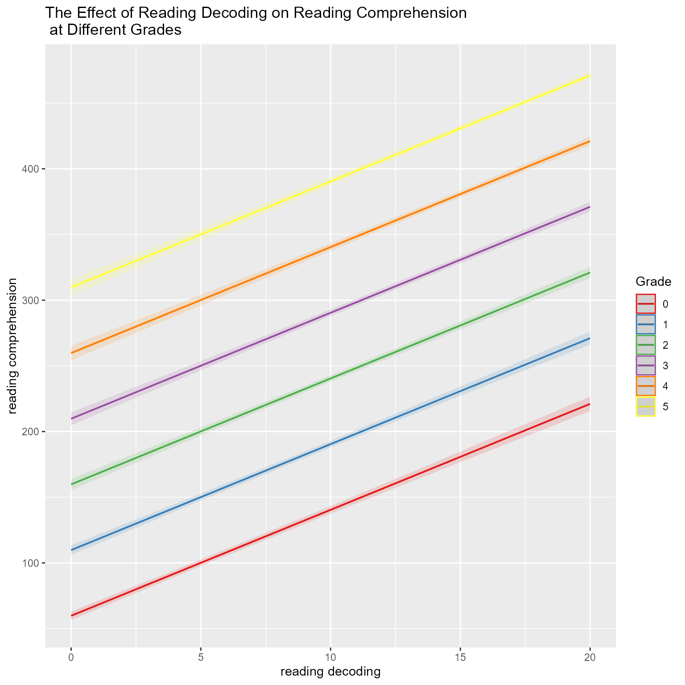
Level-1 interaction effects
Let’s see if the effect of reading decoding depends on Grade.
We fitted a linear mixed model (estimated using REML and nloptwrap optimizer)
to predict reading_comprehension with Grade and reading_decoding (formula:
reading_comprehension ~ 1 + Grade * reading_decoding). The model included
person_id as random effect (formula: ~1 | person_id). The model's total
explanatory power is substantial (conditional R2 = 0.98) and the part related
to the fixed effects alone (marginal R2) is of 0.79. The model's intercept,
corresponding to Grade = 0 and reading_decoding = 0, is at 63.71 (95% CI
[60.19, 67.23], t(11994) = 35.50, p < .001). Within this model:
- The effect of Grade is statistically significant and positive (beta = 47.98,
95% CI [46.98, 48.97], t(11994) = 94.80, p < .001; Std. beta = 0.67, 95% CI
[0.66, 0.68])
- The effect of reading decoding is statistically significant and positive
(beta = 7.61, 95% CI [7.23, 7.99], t(11994) = 38.95, p < .001; Std. beta =
0.23, 95% CI [0.22, 0.24])
- The effect of Grade × reading decoding is statistically significant and
positive (beta = 0.18, 95% CI [0.12, 0.24], t(11994) = 5.92, p < .001; Std.
beta = 8.83e-03, 95% CI [5.91e-03, 0.01])
Standardized parameters were obtained by fitting the model on a standardized
version of the dataset. 95% Confidence Intervals (CIs) and p-values were
computed using a Wald t-distribution approximation.
# compare with main effects modelanova(fit_decoding, fit_decoding_x_Grade)
plot_model(fit_decoding_x_Grade, type ="pred", terms =c("Grade [0:5]", "reading_decoding"))
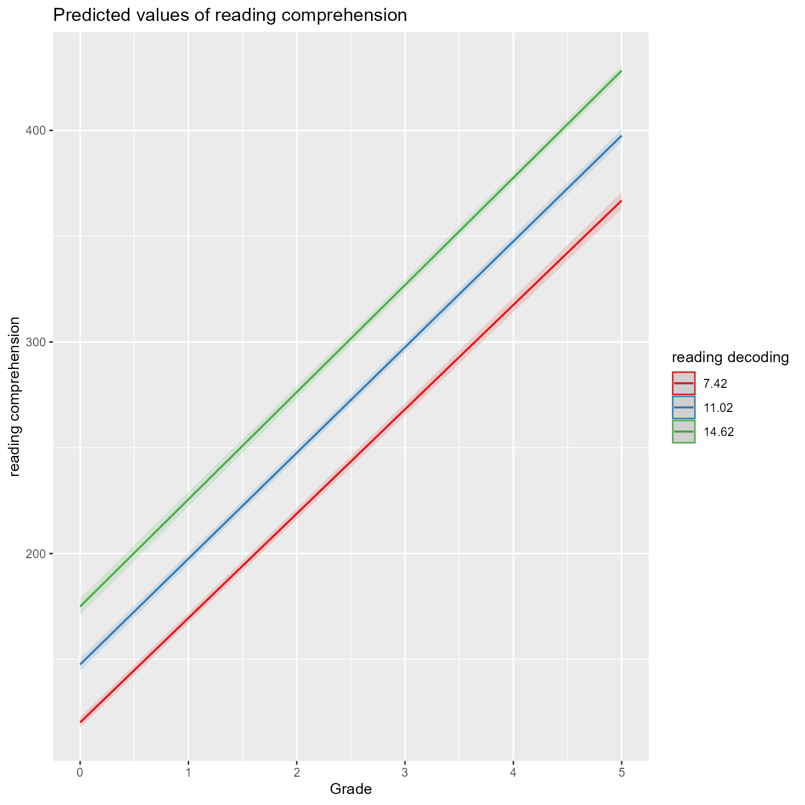
So the interaction effect is present, but tiny.
Level-2 covariate: working memory
As seen below, the effect of working memory is statistically significant, meaning that students with higher working memory tend to have better reading comprehension.
We fitted a linear mixed model (estimated using REML and nloptwrap optimizer)
to predict reading_comprehension with Grade, reading_decoding and
working_memory (formula: reading_comprehension ~ 1 + Grade * reading_decoding +
working_memory). The model included person_id as random effect (formula: ~1 |
person_id). The model's total explanatory power is substantial (conditional R2
= 0.98) and the part related to the fixed effects alone (marginal R2) is of
0.80. The model's intercept, corresponding to Grade = 0, reading_decoding = 0
and working_memory = 0, is at 64.19 (95% CI [60.72, 67.67], t(11993) = 36.21, p
< .001). Within this model:
- The effect of Grade is statistically significant and positive (beta = 48.24,
95% CI [47.25, 49.24], t(11993) = 95.21, p < .001; Std. beta = 0.67, 95% CI
[0.66, 0.68])
- The effect of reading decoding is statistically significant and positive
(beta = 7.48, 95% CI [7.09, 7.86], t(11993) = 38.19, p < .001; Std. beta =
0.22, 95% CI [0.21, 0.23])
- The effect of working memory is statistically significant and positive (beta
= 12.68, 95% CI [10.31, 15.05], t(11993) = 10.50, p < .001; Std. beta = 0.10,
95% CI [0.08, 0.12])
- The effect of Grade × reading decoding is statistically significant and
positive (beta = 0.18, 95% CI [0.12, 0.24], t(11993) = 5.92, p < .001; Std.
beta = 8.81e-03, 95% CI [5.89e-03, 0.01])
Standardized parameters were obtained by fitting the model on a standardized
version of the dataset. 95% Confidence Intervals (CIs) and p-values were
computed using a Wald t-distribution approximation.
# compare with main effects modelanova(fit_decoding_x_Grade, fit_working)
We fitted a linear mixed model (estimated using REML and nloptwrap optimizer)
to predict reading_comprehension with Grade, reading_decoding and
working_memory (formula: reading_comprehension ~ 1 + Grade * reading_decoding +
working_memory). The model included person_id as random effects (formula:
list(~1 | person_id, ~0 + Grade | person_id)). The model's total explanatory
power is substantial (conditional R2 = 0.99) and the part related to the fixed
effects alone (marginal R2) is of 0.82. The model's intercept, corresponding to
Grade = 0, reading_decoding = 0 and working_memory = 0, is at 61.32 (95% CI
[58.14, 64.51], t(11992) = 37.69, p < .001). Within this model:
- The effect of Grade is statistically significant and positive (beta = 49.45,
95% CI [48.54, 50.35], t(11992) = 107.35, p < .001; Std. beta = 0.67, 95% CI
[0.66, 0.68])
- The effect of reading decoding is statistically significant and positive
(beta = 7.85, 95% CI [7.50, 8.19], t(11992) = 44.98, p < .001; Std. beta =
0.23, 95% CI [0.22, 0.23])
- The effect of working memory is statistically significant and positive (beta
= 6.85, 95% CI [4.56, 9.13], t(11992) = 5.87, p < .001; Std. beta = 0.10, 95%
CI [0.08, 0.12])
- The effect of Grade × reading decoding is statistically significant and
positive (beta = 0.06, 95% CI [0.01, 0.11], t(11992) = 2.37, p = 0.018; Std.
beta = 3.13e-03, 95% CI [6.33e-04, 5.62e-03])
Standardized parameters were obtained by fitting the model on a standardized
version of the dataset. 95% Confidence Intervals (CIs) and p-values were
computed using a Wald t-distribution approximation.
# compare with main effects model (note refit = F because we are comparing random effects)anova(fit_working, fit_grade_random_uncorrelated, refit = F)
We can try a different optimizer to see if that helps. The lmer function’s previous default optimizer (Nelder_Mead) sometimes finds a good solution when the current default optimizer (bobyqa) does not.
fit_decoding_random_uncorrelated <-lmer(reading_comprehension ~1+ Grade * reading_decoding + working_memory + (1+ Grade + reading_decoding || person_id), data = d_level1, control =lmerControl(optimizer="Nelder_Mead"))
It worked!
summary(fit_decoding_random_uncorrelated)
Linear mixed model fit by REML ['lmerMod']
Formula:
reading_comprehension ~ 1 + Grade * reading_decoding + working_memory +
((1 | person_id) + (0 + Grade | person_id) + (0 + reading_decoding |
person_id))
Data: d_level1
Control: lmerControl(optimizer = "Nelder_Mead")
REML criterion at convergence: 110004.8
Scaled residuals:
Min 1Q Median 3Q Max
-3.2379 -0.5687 -0.0066 0.5675 3.1103
Random effects:
Groups Name Variance Std.Dev.
person_id (Intercept) 2495.324 49.953
person_id.1 Grade 17.901 4.231
person_id.2 reading_decoding 2.558 1.599
Residual 225.299 15.010
Number of obs: 12000, groups: person_id, 2000
Fixed effects:
Estimate Std. Error t value
(Intercept) 61.16775 1.60592 38.089
Grade 49.37052 0.45458 108.607
reading_decoding 7.85081 0.17819 44.059
working_memory 4.80887 1.15773 4.154
Grade:reading_decoding 0.06668 0.02645 2.521
Correlation of Fixed Effects:
(Intr) Grade rdng_d wrkng_
Grade 0.182
redng_dcdng -0.680 -0.413
workng_mmry 0.034 0.032 -0.071
Grd:rdng_dc 0.352 -0.647 -0.363 0.025
We fitted a linear mixed model (estimated using REML and Nelder-Mead optimizer)
to predict reading_comprehension with Grade, reading_decoding and
working_memory (formula: reading_comprehension ~ 1 + Grade * reading_decoding +
working_memory). The model included person_id as random effects (formula:
list(~1 | person_id, ~0 + Grade | person_id, ~0 + reading_decoding |
person_id)). The model's total explanatory power is substantial (conditional R2
= 0.99) and the part related to the fixed effects alone (marginal R2) is of
0.83. The model's intercept, corresponding to Grade = 0, reading_decoding = 0
and working_memory = 0, is at 61.17 (95% CI [58.02, 64.32], t(11991) = 38.09, p
< .001). Within this model:
- The effect of Grade is statistically significant and positive (beta = 49.37,
95% CI [48.48, 50.26], t(11991) = 108.61, p < .001; Std. beta = 0.67, 95% CI
[0.66, 0.68])
- The effect of reading decoding is statistically significant and positive
(beta = 7.85, 95% CI [7.50, 8.20], t(11991) = 44.06, p < .001; Std. beta =
0.23, 95% CI [0.22, 0.23])
- The effect of working memory is statistically significant and positive (beta
= 4.81, 95% CI [2.54, 7.08], t(11991) = 4.15, p < .001; Std. beta = 0.10, 95%
CI [0.08, 0.12])
- The effect of Grade × reading decoding is statistically significant and
positive (beta = 0.07, 95% CI [0.01, 0.12], t(11991) = 2.52, p = 0.012; Std.
beta = 3.28e-03, 95% CI [7.88e-04, 5.78e-03])
Standardized parameters were obtained by fitting the model on a standardized
version of the dataset. 95% Confidence Intervals (CIs) and p-values were
computed using a Wald t-distribution approximation.
# compare with main effects model (note refit = F because we are comparing random effects)anova(fit_grade_random_uncorrelated, fit_decoding_random_uncorrelated, refit = F)
fit_correlated_intercept_slopes <-lmer(reading_comprehension ~1+ Grade * reading_decoding + working_memory + (1+ Grade + reading_decoding | person_id), data = d_level1 %>%mutate_at(vars(reading_decoding, working_memory), scale, center = T, scale = F), control =lmerControl(optimizer="Nelder_Mead"))summary(fit_correlated_intercept_slopes)
Linear mixed model fit by REML ['lmerMod']
Formula:
reading_comprehension ~ 1 + Grade * reading_decoding + working_memory +
(1 + Grade + reading_decoding | person_id)
Data: d_level1 %>% mutate_at(vars(reading_decoding, working_memory),
scale, center = T, scale = F)
Control: lmerControl(optimizer = "Nelder_Mead")
REML criterion at convergence: 109996.6
Scaled residuals:
Min 1Q Median 3Q Max
-3.2902 -0.5690 -0.0060 0.5652 3.1303
Random effects:
Groups Name Variance Std.Dev. Corr
person_id (Intercept) 2979.649 54.586
Grade 32.179 5.673 -0.13
reading_decoding 4.533 2.129 0.43 -0.47
Residual 223.467 14.949
Number of obs: 12000, groups: person_id, 2000
Fixed effects:
Estimate Std. Error t value
(Intercept) 147.91594 1.49422 98.99
Grade 50.09898 0.35818 139.87
reading_decoding 7.85703 0.18135 43.33
working_memory 4.07157 1.15659 3.52
Grade:reading_decoding 0.06527 0.02642 2.47
Correlation of Fixed Effects:
(Intr) Grade rdng_d wrkng_
Grade -0.562
redng_dcdng 0.615 -0.855
workng_mmry -0.036 0.062 -0.071
Grd:rdng_dc -0.099 -0.007 -0.357 0.028
The model did not converge. I checked various solutions (different optimizers, more iterations, centering variables), but none worked for me. Do the slopes and intercepts correlate? From various attempts, the answer seems to be that they do not, but it is hard to be sure. The random slopes for reading decoding and Grade might be negatively correlated, but I am reluctant to trust the results of a non-convergent model, especially when I have no theoretical reason to expect such a correlation. Therefore, I am going to go with the uncorrelated slopes and intercepts model.
Cross-level interaction: Working Memory × Grade
As seen below, working memory has a positive interaction with Grade, meaning that the growth of reading comprehension (i.e., the effect of Grade) is faster with students with higher working memory capacity.
Note that the cross-level interaction is significant—and the level-1 interaction between Reading Decoding and Grade is no longer significant. What happened? Usually we would have to be pretty clever to figure out the reason, but we happen to know how the data were simulated: Working Memory and Grade really do interact, and Reading Decoding and Grade really do not. However, Working Memory and Grade are correlated (i.e., Working Memory increases over time). When Grade was not allowed to interact with Working Memory, Reading Decoding interacted with Grade, a correlate of Working Memory. Now that the true interaction has been included in the model, the false interaction is no longer significant. We can leave it in for now, but we can get rid of it at the end.
We fitted a linear mixed model (estimated using REML and nloptwrap optimizer)
to predict reading_comprehension with working_memory, Grade and
reading_decoding (formula: reading_comprehension ~ 1 + working_memory * Grade +
Grade * reading_decoding). The model included person_id as random effects
(formula: list(~1 | person_id, ~0 + Grade | person_id, ~0 + reading_decoding |
person_id)). The model's total explanatory power is substantial (conditional R2
= 0.99) and the part related to the fixed effects alone (marginal R2) is of
0.83. The model's intercept, corresponding to working_memory = 0, Grade = 0 and
reading_decoding = 0, is at 60.47 (95% CI [57.35, 63.59], t(11990) = 38.03, p <
.001). Within this model:
- The effect of working memory is statistically significant and positive (beta
= 4.62, 95% CI [2.36, 6.89], t(11990) = 4.00, p < .001; Std. beta = 0.10, 95%
CI [0.08, 0.12])
- The effect of Grade is statistically significant and positive (beta = 50.10,
95% CI [49.23, 50.96], t(11990) = 113.77, p < .001; Std. beta = 0.67, 95% CI
[0.66, 0.68])
- The effect of reading decoding is statistically significant and positive
(beta = 7.93, 95% CI [7.59, 8.28], t(11990) = 44.89, p < .001; Std. beta =
0.22, 95% CI [0.21, 0.23])
- The effect of working memory × Grade is statistically significant and
positive (beta = 3.55, 95% CI [3.32, 3.79], t(11990) = 30.03, p < .001; Std.
beta = 0.05, 95% CI [0.04, 0.05])
- The effect of Grade × reading decoding is statistically non-significant and
positive (beta = 6.28e-03, 95% CI [-0.05, 0.06], t(11990) = 0.24, p = 0.813;
Std. beta = 4.20e-04, 95% CI [-2.08e-03, 2.92e-03])
Standardized parameters were obtained by fitting the model on a standardized
version of the dataset. 95% Confidence Intervals (CIs) and p-values were
computed using a Wald t-distribution approximation.
# compare with main effects model (note refit = F because we are comparing random effects)anova(fit_grade_random_uncorrelated, fit_wm_x_grade, refit = F)
Cross-level interaction: Working Memory × Reading Decoding
The interaction of working memory and reading decoding is negative, meaning that reading decoding is a weaker predictor of reading comprehension among students with higher working memory.
We fitted a linear mixed model (estimated using REML and nloptwrap optimizer)
to predict reading_comprehension with working_memory, reading_decoding and
Grade (formula: reading_comprehension ~ 1 + working_memory * reading_decoding +
working_memory * Grade + reading_decoding * Grade). The model included
person_id as random effects (formula: list(~1 | person_id, ~0 + Grade |
person_id, ~0 + reading_decoding | person_id)). The model's total explanatory
power is substantial (conditional R2 = 0.99) and the part related to the fixed
effects alone (marginal R2) is of 0.83. The model's intercept, corresponding to
working_memory = 0, reading_decoding = 0 and Grade = 0, is at 60.79 (95% CI
[57.68, 63.90], t(11989) = 38.26, p < .001). Within this model:
- The effect of working memory is statistically significant and positive (beta
= 10.74, 95% CI [7.85, 13.62], t(11989) = 7.30, p < .001; Std. beta = 0.10, 95%
CI [0.08, 0.12])
- The effect of reading decoding is statistically significant and positive
(beta = 7.96, 95% CI [7.62, 8.31], t(11989) = 45.16, p < .001; Std. beta =
0.22, 95% CI [0.21, 0.23])
- The effect of Grade is statistically significant and positive (beta = 50.10,
95% CI [49.24, 50.97], t(11989) = 113.96, p < .001; Std. beta = 0.67, 95% CI
[0.66, 0.68])
- The effect of working memory × reading decoding is statistically significant
and negative (beta = -1.09, 95% CI [-1.41, -0.77], t(11989) = -6.73, p < .001;
Std. beta = -0.03, 95% CI [-0.04, -0.02])
- The effect of working memory × Grade is statistically significant and
positive (beta = 5.58, 95% CI [4.95, 6.22], t(11989) = 17.23, p < .001; Std.
beta = 0.08, 95% CI [0.07, 0.08])
- The effect of reading decoding × Grade is statistically non-significant and
positive (beta = 3.08e-03, 95% CI [-0.05, 0.05], t(11989) = 0.12, p = 0.907;
Std. beta = 2.63e-04, 95% CI [-2.23e-03, 2.76e-03])
Standardized parameters were obtained by fitting the model on a standardized
version of the dataset. 95% Confidence Intervals (CIs) and p-values were
computed using a Wald t-distribution approximation.
# compare with main effects model (note refit = F because we are comparing random effects)anova(fit_wm_x_grade, fit_wm_x_decoding, refit = F)
We fitted a linear mixed model (estimated using REML and nloptwrap optimizer)
to predict reading_comprehension with working_memory, reading_decoding and
Grade (formula: reading_comprehension ~ 1 + working_memory * reading_decoding +
working_memory * Grade). The model included person_id as random effects
(formula: list(~1 | person_id, ~0 + Grade | person_id, ~0 + reading_decoding |
person_id)). The model's total explanatory power is substantial (conditional R2
= 0.99) and the part related to the fixed effects alone (marginal R2) is of
0.83. The model's intercept, corresponding to working_memory = 0,
reading_decoding = 0 and Grade = 0, is at 60.72 (95% CI [57.81, 63.64],
t(11990) = 40.88, p < .001). Within this model:
- The effect of working memory is statistically significant and positive (beta
= 10.74, 95% CI [7.85, 13.62], t(11990) = 7.30, p < .001; Std. beta = 0.10, 95%
CI [0.08, 0.12])
- The effect of reading decoding is statistically significant and positive
(beta = 7.97, 95% CI [7.65, 8.29], t(11990) = 48.60, p < .001; Std. beta =
0.22, 95% CI [0.21, 0.23])
- The effect of Grade is statistically significant and positive (beta = 50.14,
95% CI [49.50, 50.78], t(11990) = 153.24, p < .001; Std. beta = 0.67, 95% CI
[0.66, 0.68])
- The effect of working memory × reading decoding is statistically significant
and negative (beta = -1.09, 95% CI [-1.41, -0.77], t(11990) = -6.73, p < .001;
Std. beta = -0.03, 95% CI [-0.04, -0.02])
- The effect of working memory × Grade is statistically significant and
positive (beta = 5.58, 95% CI [4.95, 6.22], t(11990) = 17.27, p < .001; Std.
beta = 0.08, 95% CI [0.07, 0.08])
Standardized parameters were obtained by fitting the model on a standardized
version of the dataset. 95% Confidence Intervals (CIs) and p-values were
computed using a Wald t-distribution approximation.
# compare with main effects model (note refit = F because we are comparing random effects)anova(fit_wm_x_decoding, fit_final, refit = F)
In this plot, we can see that Reading Decoding’s effect is steeper for individuals with lower working memory:
plot_model(fit_final, type ="pred", terms =c("reading_decoding", "working_memory [-1, 0, 1]", "Grade [0:5]"),title ="The Effect of Reading Decoding on Reading Comprehension\n at Different Levels of Working Memory and Grade")
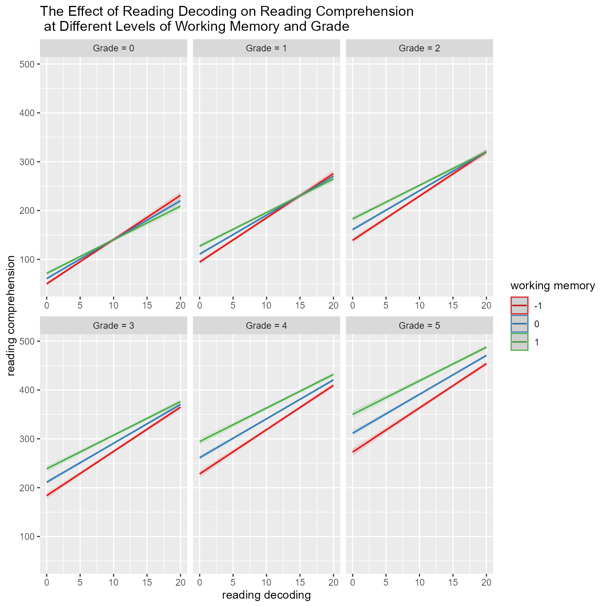
An alternate view of the same model suggests that the effect of working memory on reading comprehension is minimal in Kindergarten (Grade 0) and 1st grade when the focus is more on reading letters, single words, and very short sentences. However as the focus moves to longer, more complex sentences and paragraphs, the effect of Working Memory on Reading Comprehension increases.
plot_model(fit_final, type ="pred", terms =c("working_memory [-2, 2]", "reading_decoding [5, 10, 15]", "Grade [0:5]"),title ="The Effect of Working Memory on Reading Comprehension\n at Different Levels of Reading Decoding and Grade") +theme_light(base_size =16, base_family ="Roboto Condensed") +theme(legend.position =c(0,1), legend.justification =c(0,1)) +scale_color_viridis_d("Reading\nDecoding", begin = .2, end = .8) +labs(x ="Working Memory", y ="Reading Comprehension")
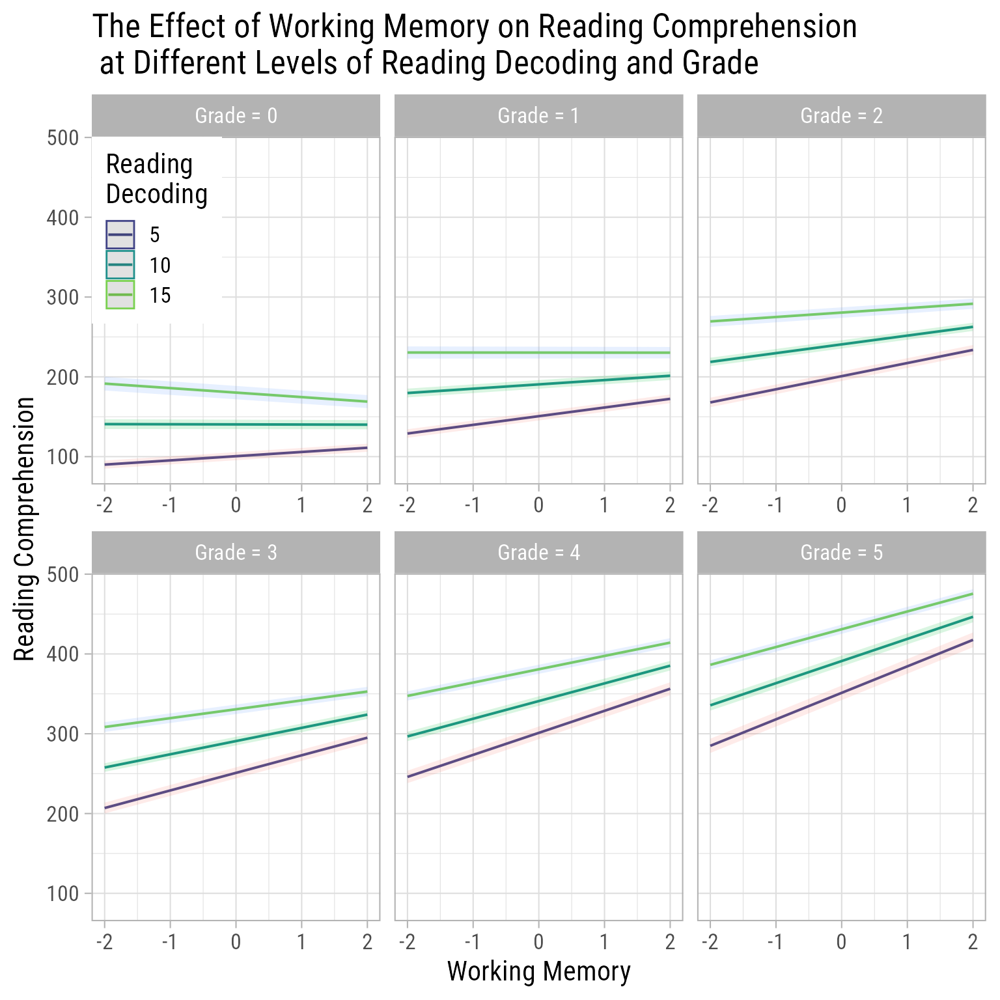
Figure 10
Another view of the same model suggests that students with higher Working Memory have faster Reading Comprehension growth rates, even after controlling for Reading Decoding.
plot_model(fit_final, type ="pred", terms =c("Grade [0:5]", "working_memory [-1, 0, 1]", "reading_decoding [5, 10, 15]"),title ="The Effect of Working Memory on Reading Comprehension\n at Different Levels of Reading Decoding and Grade") +theme_light(base_size =16, base_family ="Roboto Condensed") +theme(legend.position =c(0,1), legend.justification =c(0,1)) +scale_color_viridis_d("Working\nMemory", begin = .2, end = .8) +labs(x ="Grade", y ="Reading Comprehension")
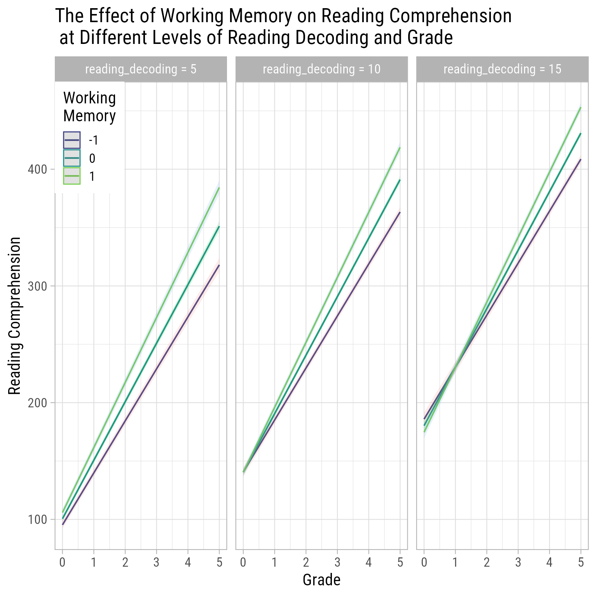
Figure 11
Reflect
How this method could be used in your own research?
Exercise
Imagine that n = 1000 participants with anxiety disorders were in a 10-week study of meditation’s effect on reducing anxiety over time. Each participant was assigned to a student therapist who taught the meditation techniques to the participants. Transcriptions of the instruction session were rated for levels of therapist support.
Variables:
person_id: The identifier for each person
Week : The week on which data were collected, starting with Week 0 and ending on Week 4.
Anxiety: The overall level of Anxiety participants reported for the Week (level 1).
therapist_support A person-level (level 2) rating of overall therapist support.
minutes_meditating The total hours spent meditating each week.
Predictions:
The more time spent each week in meditation, the more anxiety will reduce over time. Note that this is NOT a prediction that the simple effect of meditation will be positive. It is instead a prediction that meditation will interact (negatively) with the time variable Week.
The therapist’s overall level of support is predicted to interact with time (i.e., Week) such that participants with more supportive therapists will improve more quickly than participants with less support therapists.
The therapist’s overall level of support is predicted to increase the potency of meditation’s effect over time. That is, a negative value is predicted for the 3-way interaction between therapist support, minutes meditated, and time (Week).
By every criterion, fit_week fits better than fit_0. Thus, there is a significant association with Week and Anxiety. Because the slope of Week is negative, people’s anxiety decreased over time by about -1.05 points per week.
Question 3
In model fit_week, what proportion of variance in Anxiety is explained by Week?
Hint (Click)
Look at the R2_marginal column in the performance::model_performance(fit_week) output.
Question 4
In the output of summary(fit_week), where would you look to see how much anxiety is changing from week to week, on average?
We did not predict non-linear effects of time, but it is good idea to check. Usually you include enough polynomial degrees to be consistent with your models. If you have no prediction, add them one at a time, but be conservative in doing so.
fit_week_2 <-lmer(Anxiety ~1+poly(Week, 2) + (1| person_id), data = d)summary(fit_week_2)
Linear mixed model fit by REML ['lmerMod']
Formula: Anxiety ~ 1 + poly(Week, 2) + (1 | person_id)
Data: d
REML criterion at convergence: 77745.6
Scaled residuals:
Min 1Q Median 3Q Max
-6.9612 -0.4497 0.1040 0.6023 2.8793
Random effects:
Groups Name Variance Std.Dev.
person_id (Intercept) 31.42 5.605
Residual 57.64 7.592
Number of obs: 11000, groups: person_id, 1000
Fixed effects:
Estimate Std. Error t value
(Intercept) 65.0000 0.1915 339.502
poly(Week, 2)1 -347.4464 7.5924 -45.763
poly(Week, 2)2 -6.9694 7.5924 -0.918
Correlation of Fixed Effects:
(Intr) p(W,2)1
poly(Wk,2)1 0.000
poly(Wk,2)2 0.000 0.000
Here we see that the quadratic effect of Week is not significant, so we need not continue adding polynomial degrees. If we did, it would look like this:
fit_week_3 <-lmer(Anxiety ~1+poly(Week, 3) + (1| person_id), data = d)summary(fit_week_3)
Linear mixed model fit by REML ['lmerMod']
Formula: Anxiety ~ 1 + poly(Week, 3) + (1 | person_id)
Data: d
REML criterion at convergence: 77737.9
Scaled residuals:
Min 1Q Median 3Q Max
-6.9654 -0.4497 0.1032 0.6000 2.8946
Random effects:
Groups Name Variance Std.Dev.
person_id (Intercept) 31.42 5.605
Residual 57.64 7.592
Number of obs: 11000, groups: person_id, 1000
Fixed effects:
Estimate Std. Error t value
(Intercept) 65.0000 0.1915 339.502
poly(Week, 3)1 -347.4464 7.5920 -45.765
poly(Week, 3)2 -6.9694 7.5920 -0.918
poly(Week, 3)3 -10.3752 7.5920 -1.367
Correlation of Fixed Effects:
(Intr) p(W,3)1 p(W,3)2
poly(Wk,3)1 0.000
poly(Wk,3)2 0.000 0.000
poly(Wk,3)3 0.000 0.000 0.000
When you the output, you will see that the effect of meditation_hours is significant. From the report function, the standardized beta (the effect if all variables were standardized) for meditation_hours is larger than the effect of Week. Theoretically, this result makes sense. Anxiety should decrease because of the intervention, not just because of time passing. Still, the effect of Week is significant, perhaps because of therapist contact and/or regression to the mean.
Nice plot and table:
plot_model(fit_meditation, type ="pred", terms =c("Week", "meditation_hours [0, 5, 10]"))
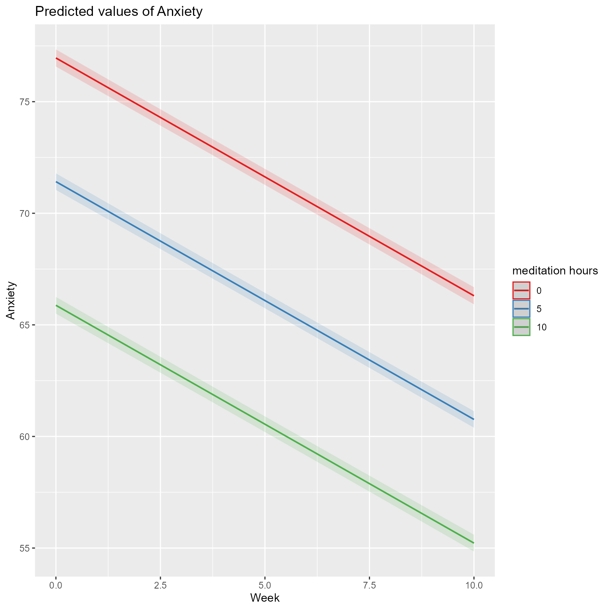
Figure 13: The Predicted Effects of Week by Meditation Hours
tab_model(fit_meditation)
Anxiety
Predictors
Estimates
CI
p
(Intercept)
76.96
76.57 – 77.34
<0.001
Week
-1.07
-1.09 – -1.04
<0.001
meditation hours
-1.11
-1.12 – -1.09
<0.001
Random Effects
σ2
20.60
τ00person_id
29.20
ICC
0.59
N person_id
1000
Observations
11000
Marginal R2 / Conditional R2
0.497 / 0.792
Table 5: Model for the Combined Effects of Week and Meditation
Add the predicted interaction of Week and meditation_hours.
We fitted a linear mixed model (estimated using REML and nloptwrap optimizer)
to predict Anxiety with Week and meditation_hours (formula: Anxiety ~ 1 + Week
* meditation_hours). The model included person_id as random effect (formula: ~1
| person_id). The model's total explanatory power is substantial (conditional
R2 = 0.89) and the part related to the fixed effects alone (marginal R2) is of
0.59. The model's intercept, corresponding to Week = 0 and meditation_hours =
0, is at 71.87 (95% CI [71.49, 72.25], t(10994) = 370.28, p < .001). Within
this model:
- The effect of Week is statistically significant and negative (beta = -0.04,
95% CI [-0.07, -0.01], t(10994) = -2.74, p = 0.006; Std. beta = -0.33, 95% CI
[-0.34, -0.33])
- The effect of meditation hours is statistically significant and negative
(beta = -0.27, 95% CI [-0.29, -0.25], t(10994) = -23.98, p < .001; Std. beta =
-0.62, 95% CI [-0.63, -0.62])
- The effect of Week × meditation hours is statistically significant and
negative (beta = -0.17, 95% CI [-0.17, -0.17], t(10994) = -90.26, p < .001;
Std. beta = -0.30, 95% CI [-0.31, -0.29])
Standardized parameters were obtained by fitting the model on a standardized
version of the dataset. 95% Confidence Intervals (CIs) and p-values were
computed using a Wald t-distribution approximation.
plot_model(fit_week_x_meditation, type ="pred", terms =c("Week", "meditation_hours [0, 5, 10]"))
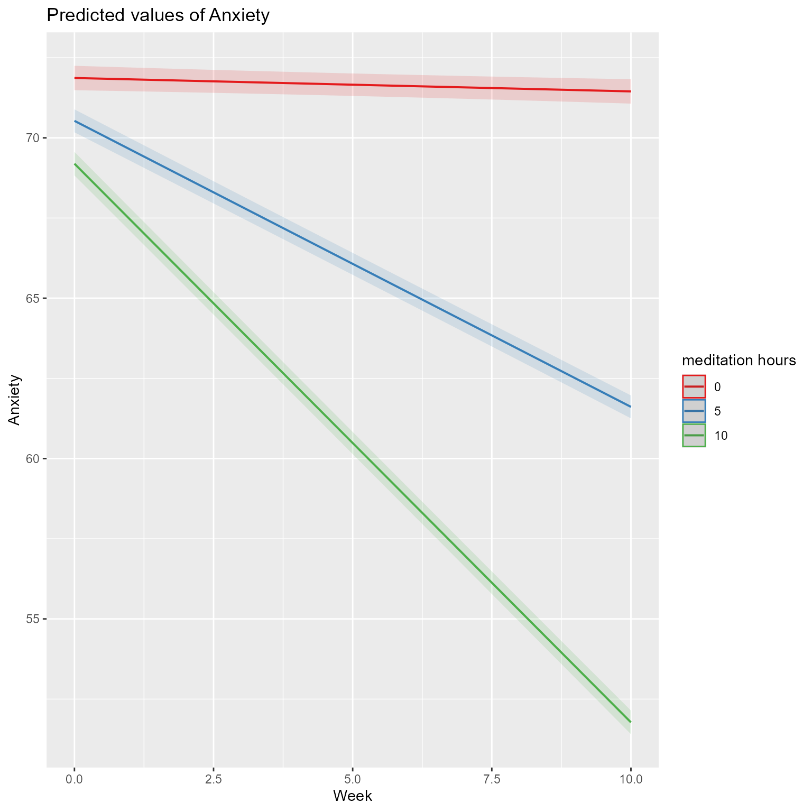
tab_model(fit_week_x_meditation)
Anxiety
Predictors
Estimates
CI
p
(Intercept)
71.87
71.49 – 72.25
<0.001
Week
-0.04
-0.07 – -0.01
0.006
meditation hours
-0.27
-0.29 – -0.25
<0.001
Week × meditation hours
-0.17
-0.17 – -0.17
<0.001
Random Effects
σ2
11.36
τ00person_id
29.50
ICC
0.72
N person_id
1000
Observations
11000
Marginal R2 / Conditional R2
0.588 / 0.885
We see that the hypothesized interaction is significant, meaning that the effect of Week depends on meditation_hours. In the plot, you can see that the reduction of Anxiety over time is larger for people who meditation more.
Note that in the output the fixed effects of Week and meditation_hours are simple slopes. They tell us what the slope of the variable is when the other predictors in the interaction are 0. For statistical significance of simple slopes, you can look in the output of report.
Question 5
In model fit_week_x_meditation, when meditation_hours is 0, is the slope of Week statistically significant?
Add the L2 predictor
Add therapist_support to the previous model. Call the model fit_support. Run summary, model_performance, and report on the model. Compare fit_support with the previous model, fit_meditation.
There is not a significant effect here. Note the use of refit = FALSE in the anova function. This is good practice when comparing models that differ only in their random effects.
Again, no significant effect here. We are not really sure, however, because the model did not converge. However, we did not predict a random slope, so to be conservative, we revert back to fit_support as our comparison model.
Add hypothesized interaction terms
We hypothesized a 3-way interaction of Week, meditation_hours, and therapist_support. Add it to the fit_support model.
Try setting up the code yourself. Call the model fit_3_way_interaction.
Pretend that the warning (boundary (singular) fit: see ?isSingular) is not there.
Run summary, model_performance, and report on the model.
The results of the anova model comparison is significant, but we can see that the three-way interaction is not. Let’s plot the model and see what is going on.
Figure 14: Interaction of Week, Meditation, and Therapist Support
From the plot and the summary output, the significant effect appears to be in the 2-way interaction of meditation_hours and therapist_support. You cannot be sure about that until you run the model.
Add 2-way interaction
Add the interaction of therapist_support and meditation_hoursto the fit_support model
Try setting up the code yourself. Call the model fit_support_x_meditation.
Run summary, model_performance, and report on the model.